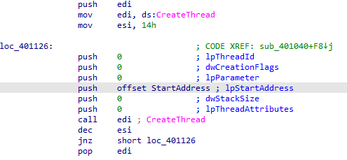

Practical Malware Analysis - Lab 7
Lab 7-1
Analyze the malware found in the file Lab07-01.exe.
Q1: How does this program ensure that it continues running (achieves persistence) when the computer is restarted?
Into the main function it calls StartServiceCtrlDispatcherA to Connect the main thread of a service process to the service control manager.
it passes function 401040 to the control manager going into it, it starts a mutex (to ensure only one instance running of the malware) and run startservice with startype 2 (which is autostart at pc startup)
Q2: Why does this program use a mutex?
To ensure ensure only one instance running of the malware. and using hardcoded mutex name because mutex’s name must be consistent if it’s used by two processes that aren’t communicating in any other way.
Q3: What is a good host-based signature to use for detecting this program?
We can use command sc qc Malservice
or check hardcoded string for the mutex HGL345
Q4: What is a good network-based signature for detecting this malware?
It creates a thread with a function offset passed into it
In the function it opens a url http://www.malwareanalysisbook.com with User-agent Internet explorer 8 that makes good network-based signature
Q5: What is the purpose of this program?
So it calls Waitforsingleobject and passes to it handle for set waitable timer to wait for certain time which is 2100 (834h in 4010DE)
when it reaches that year 2100 it will start a thread in a loop for 20 times
in that loop that function to open a url http://www.malwareanalysisbook.com with User-agent Internet explorer 8 which may by a setup for a zombie botnet for dos
Q6: When will this program finish executing?
Lab 7-2
Analyze the malware found in the file Lab07-02.exe.
Q1: How does this program achieve persistence?
Q2: What is the purpose of this program?
It utilizes COM object because of the indicators OleInitialize , CoCreateInstance
By going into our register at Computer\HKEY_LOCAL_MACHINE\SOFTWARE\Classes\CLSID and search for
2DF01 clsid that is used in the COM object
we see it is Internet explorer
Then a string ‘http://www.malwareanalysisbook.com/ad.html’ is passed to the functionality maybe adware
so now we know it opens the site using internet eplorer
Q3: When will this program finish executing?
It will unintialize the COM object normally after finishes its function to open the adware
Lab 7-3
For this lab, we obtained the malicious executable, Lab07-03.exe, and DLL, Lab07-03.dll, prior to executing. This is important to note because the malware might change once it runs. Both files were found in the same directory on the victim machine. If you run the program, you should ensure that both files are in the same directory on the analysis machine. A visible IP string beginning with 127 (a loopback address) connects to the local machine. (In the real version of this malware, this address connects to a remote machine, but we’ve set it to connect to localhost to protect you.)
WARNING This lab may cause considerable damage to your computer and may be difficult to
remove once installed. Do not run this file without a virtual machine with a snapshot
taken prior to execution.
This lab may be a bit more challenging than previous ones. You’ll need to use a combination of static and dynamic methods, and focus on the big picture in order to avoid getting bogged down by the details.
Q1: How does this program achieve persistence to ensure that it continues running when the computer is restarted?
Into the main function it starts a service
Q2: What are two good host-based signatures for this malware?
Q3: What is the purpose of this program?
Q4: How could you remove this malware once it is installed?